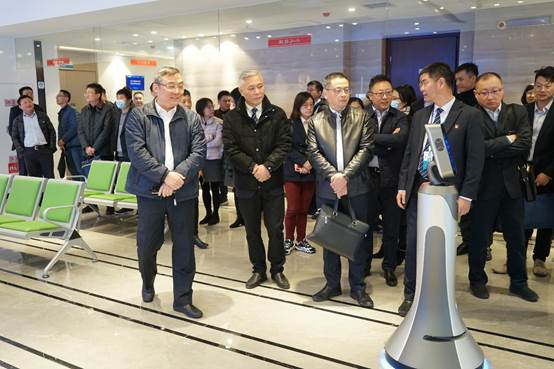

【信息发布时间：2020-12-03阅读次数：】 【我要打印】 【关闭】
为进一步加强苏州市公共资源系统沟通交流，总结2020年度、谋划2021年度工作，12月1日下午，市行政审批局副局长张硕群带队前往张家港分中心参观张家港公共资源交易中心场地建设，并开展工作座谈会。

座谈会上，会议传达了全市公共资源交易管理委员会2020年度工作会议精神；听取了电子保函建设情况和市政府集中采购中心运行情况；审议了公共资源交易系统干部交流挂职指导意见、信息员管理办法征求意见稿；听取了公共资源交易中心各部门、各分中心、各企业工作推进情况。各地就本年度工作情况及下一年度工作计划进行了深入探讨与交流。
张硕群副局长对电子保函建设和集中采购中心运行情况，对各部门、各分中心、各企业的工作成果表示充分肯定，并对2021年工作做出了重要指示。
在全面总结了本年度我市公共资源交易工作成效后，张硕群副局长对下一步工作具体提出以下要求：一是要加强统筹凝聚力，全市各中心要积极推进建立整合统一的交易平台；二是要完善立法保障工作，推动出台市级层面公共资源交易工作条例，使公共资源交易工作有法可依；三是持续做好课题研究，从公共资源交易立法及长三角一体化两个重点方向着手开展研究工作；四是持续不断优化营商环境，各中心应多措并举，进一步深化“不见面”交易，营造舒心便捷透明的交易环境；五是树立大局意识，进一步融入长三角一体化等国家战略大局。
苏州市行政审批局公管处处长谢伟、副处长张领，市公共资源交易中心副主任张彬、邵元，各分中心主要负责人及市级中心有关部门负责人参加了座谈。